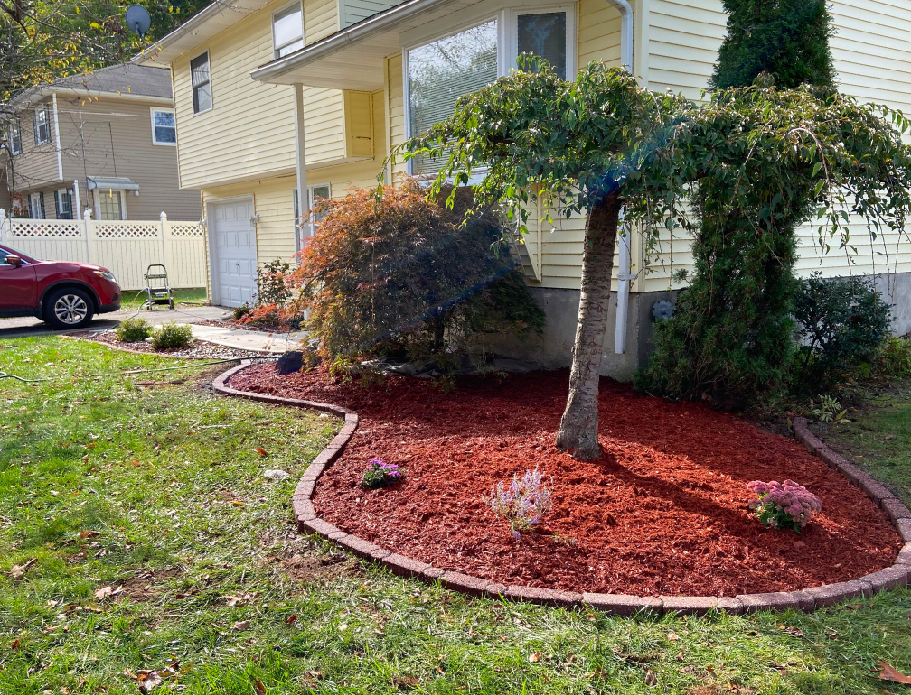

Everything your outdoor space needs — designed and executed by Poughkeepsie's most experienced landscaping team.
At W&B Landscaping & Cleaning Service, we offer a comprehensive range of outdoor landscaping and hardscaping services to homeowners throughout Poughkeepsie, NY and the greater Hudson Valley. Whether you need your lawn mowed weekly, a stunning paver patio for outdoor entertaining, a complete landscape design, or reliable snow removal all winter long — we are your one-stop solution.
Every service we provide is backed by 7+ years of hands-on experience, quality materials, and a team that takes genuine pride in their craft. We serve all of Dutchess County and surrounding areas from Wappingers Falls to Beacon and beyond.
Structural beauty built to last — our hardscape services transform your property and increase its value for decades.

A custom paver patio is one of the best investments you can make in your Poughkeepsie home. Unlike poured concrete, paver patios are elegant, durable, and easy to repair. They provide superior drainage, resist cracking through New York's harsh freeze-thaw cycles, and come in a wide range of colors, textures, and patterns to perfectly complement your home's style.
We have installed patios of all sizes — from cozy backyard retreats to large multi-level entertainment spaces — across Dutchess County and the Hudson Valley. Every patio is installed on a properly prepared base of compacted gravel and bedding sand, ensuring it stays level and beautiful for years to come.

A beautiful paver walkway dramatically improves the curb appeal and functionality of any property. Whether you need a formal straight walkway from the driveway to your front door or a winding garden path, we design and install walkways that are both stunning and built to last through New York winters.
We install paver walkways using premium paving stone systems laid on properly prepared bases with edge restraints for long-term stability. Every walkway we build is matched to the aesthetic of your home and the surrounding landscape for a cohesive, polished result.

A paver driveway is a statement. It instantly elevates your home's curb appeal, increases property value, and provides a durable, low-maintenance surface that outlasts asphalt and poured concrete in New York's climate. Pavers flex slightly under load, resisting the cracking common in concrete driveways.
We install paver driveways with the structural depth required for vehicle traffic — using a robust compacted aggregate base and quality paving stones rated for driveway use. We also properly integrate drainage to prevent water pooling and protect adjacent landscaping.
We keep your property looking its best through every season with professional lawn and garden services.

Professional, reliable lawn mowing service on a schedule that works for you. We cut at the proper height for your grass type, trim edges cleanly, and blow off all clippings — leaving your lawn looking neat, healthy, and professionally maintained every single visit.

Keep your garden beds looking pristine with our regular garden maintenance service. We weed, trim, shape, and care for your plants and shrubs on an ongoing basis — maintaining the beauty of your landscape throughout the entire growing season.

Start the season right with a professional spring cleanup. We remove all winter debris, dead leaves, and organic buildup from beds and lawn areas, cut back perennials, edge all beds, and prepare your property for a fresh, beautiful growing season.

Protect your property through the winter with a thorough fall cleanup. We remove all fallen leaves, cut back spent perennials, clean out garden beds, and prepare your lawn and landscape for the cold months ahead — so you start spring without the mess.

Fresh mulch dramatically improves the appearance of any landscape. We install hardwood mulch, pine mulch, and decorative stone in all sizes — properly applied to suppress weeds, retain soil moisture, regulate temperature, and give your landscape a clean, finished look all season long.

Transform your yard with beautifully designed and planted flower beds. We design, prepare, and plant seasonal and perennial flower beds that add color, texture, and life to your outdoor space — and we maintain them throughout the season so they always look their best.
A thoughtfully designed landscape doesn't just look beautiful — it adds real value to your home and makes outdoor living a joy.

Our landscape design service combines your vision with our expertise to create outdoor spaces that are both stunning and practical. We assess your property's unique characteristics — sun exposure, soil, existing features, and your lifestyle needs — and develop a design that transforms the entire space into a cohesive, beautiful landscape.
From planting plans and bed layouts to paver integration, lighting, and seasonal color, we handle the full picture. Every design we create is tailored specifically to the individual property — no generic templates, no cookie-cutter solutions. Just thoughtful, professional design rooted in over 7 years of Hudson Valley experience.
Reliable, prompt snow removal to keep your property safe and accessible all winter long.

Hudson Valley winters can be brutal — and having a reliable snow removal partner makes all the difference. W&B Landscaping provides prompt, professional snow removal service for residential driveways, walkways, parking areas, and commercial properties throughout Poughkeepsie and surrounding communities.
We offer seasonal contracts and per-event service, giving you flexibility depending on your needs. Our team mobilizes quickly after snowfall events to ensure your property is cleared and safe — so you can get on with your day without the back-breaking work. We also apply ice melt treatments to prevent dangerous icy surfaces.
Browse our portfolio of completed landscaping and hardscaping projects across the Hudson Valley.


.jpeg)


.jpeg)
Contact us today for a free, no-obligation estimate on any of our services.